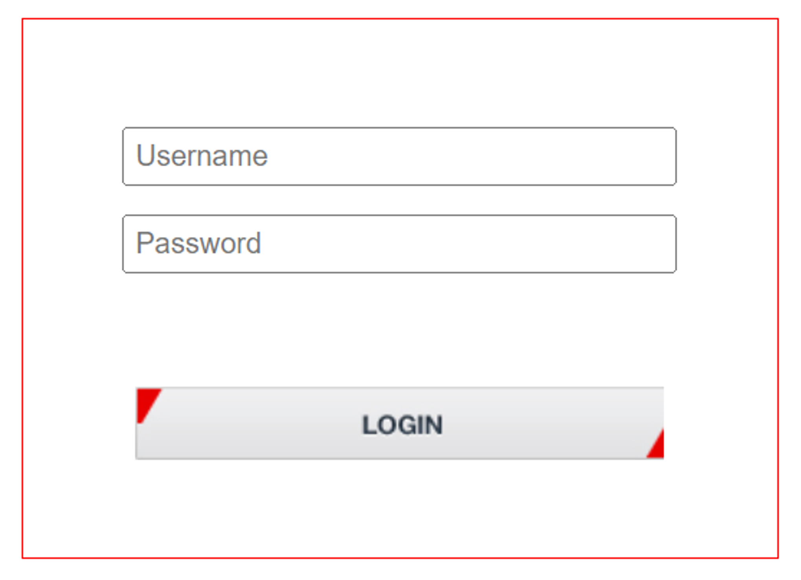
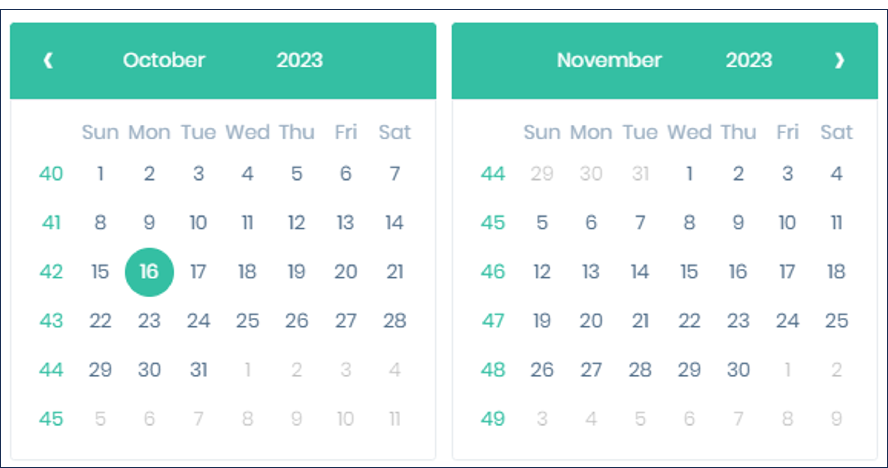

Inex ALPR for the TIBA Parking System
Installation and Calibration Guide
Click to show the Table of Contents
- 1. Background
- 2. Computer and Software Requirements
- 3. Solution BOM
- 4. Lane Design
- 5. Camera Wiring
- 6. Use IZ Discovery
- 7. Log In to a Camera
- 8. LPR Camera (Sensor) Configuration
- 9. OV Camera (Sensor) Configuration
- 10. Prepare to Aim and Calibrate
- 11. Log In to RoadView
- 12. Configure RoadView - Settings Tab
- 13. Configure RoadView - System Info Tab
- 14. Calibrating the Cameras Using RoadView
- 15. Verify System Operation
- 16. IZCloud Automatic License Plate Recognition (ALPR) Performance Monitoring
- 17. RoadView Troubleshooting
- 18. Legal Notices
1. Background
This document describes how to install, configure and calibrate an Inex ALPR Camera for a single lane, to work with the TIBA Parking System.
2. Computer and Software Requirements
-
Computer running with Windows 10 or later
-
Chrome or Microsoft Edge browser
|
The minimum TIBA SmartPark version required is 9.3.3 |
3. Solution BOM
-
Camera System:
-
IZA500GR-DRW-P48 - for USA, Mexico, Canada
-
IZA500GR-IRW-P48 - for Israel, EU, Taiwan, Australia, Vietnam, GCC, India, Singapore
-
RoadView Advanced ALPR Software, version 1.15.64.97
-
-
Power Supply for P48 models
-
IZPWR75+IZ4POE - for a single camera
-
IZPWR120+IZ4POE - for two cameras
-
IZPWR240+IZ4POE - for four cameras
-
-
Camera Mounting hardware
-
IZMNTA-WE - wall mount
-
IZMNTA-WE+MNT-PMA - pole mount
-
IZMNTA-UC - under-ceiling
-
-
IZCLOUD-APM - IZCloud Automatic License Plate Recognition (ALPR) Performance Monitoring
4. Lane Design
| Item | Specification | |
|---|---|---|
Field of View (FOV) |
12 ft (H) x 8 ft (V) (3.7 x 2.4 m) |
|
Max Vehicle Speed |
Up to 40 mph (64 km/h) |
|
LPR Capture Distance (D) |
5-70 ft (1.5-21 m); 8 ft (2.4 m) recommended |
|

5. Camera Wiring
| Item | Description | Ordering Information |
|---|---|---|
A |
LAN Patch Cable - CAT6, max. length 3.3 ft (1 m) |
Supplied by integrator |
B |
LAN Cable - CAT6, shielded, 4 pairs, 22 AWG, max. length 328 ft (100 m), OD 5.5-7.9 mm |
Supplied by integrator; 6.6 ft (2 m) included with camera |
C |
PAS (Power and Signals) Cable - 22 AWG, OD 3.0-7.3 mm |
Supplied by integrator; 6.6 ft (2 m) cable included with camera |
D |
Power Supply - 48 VDC |
For 1 camera, use a 75 W supply (IZPWR75-48) |
E |
Gate |
Supplied by integrator |
F |
Inductive Loop |
Supplied by integrator |
G |
Loop Detector |
Supplied by integrator |
-
The IZ4POE is required for the PoE+ input power option; a standard PoE network switch cannot be used.
6. Use IZ Discovery
The factory default IP addresses of the onboard processor, LPR and OV cameras are on the unit’s sticker, typically: Processor (192.168.5.110), LPR (192.168.5.111) and OV (192.168.5.112). If needed, use IZ Discovery to change to other consecutive network addresses you have allocated.
6.1. Installing and Using IZ Discovery
The IZ Discovery utility discovers all active devices connected to the network, and displays a list of their network parameters. These devices can include cameras and computers.
|
If any device on your network is connected via wireless, IZ Discovery will not recognize the device. In addition, if the computer running IZ Discovery is connected via wireless, you will not see any devices displayed. |
-
Download the IZ Discovery software (link)
-
Run IZ Discovery
-
When IZ Discovery first runs, you may see a Windows security warning. If so, click Run.
-
If you see a message related to the Windows firewall, click Allow.
-
IZ Discovery will start and display a list of devices on the network, according to their serial numbers (see Figure 4).
-
Scroll down to find the device you are interested in. You can double-click to view/edit a specific device’s IP address parameters (see Section 6.2).
-
Click Clear List to refresh the discovery process.
 Figure 4. IZ Discovery Utility
Figure 4. IZ Discovery Utility
-
-
If IZ Discovery does not recognize a device:
-
Press the device’s reset button (if available)
-
Reset the device by shutting off power/removing the LAN cable, waiting 5 seconds, and reapplying power
-
Check the LAN cable between your laptop and the network, and the LAN cable between the device and the LAN switch. Replace the cable(s) and run IZ Discovery again.
-
6.2. Changing a Device’s IP Address and Network Settings

|
It is highly recommended to use a fixed IP address (not DHCP). A fixed IP address enables you to access the computer using the same URL every time, even after unexpected power outages. A dynamic IP address may change upon device reboot. Before opening the web interface, you will have to find the current IP address of the device using IZ Discovery. If you want to copy the IP address (for login to the device) you will need to uncheck the DHCP checkbox momentarily to make the address field accessible. For devices using RoadView software, you can change the IP address using the RoadView Settings tab. If your device is an Inex Camera System, be sure to define IP addresses for each camera (LPR and Overview), using each camera’s configuration application. It is recommended to use sequential IP addresses for the Camera System and its cameras; for example: 192.168.5.110, 192.168.5.111, 192.168.5.112 |
To change the device’s mode (fixed or dynamic [DHCP]), or IP address:
-
Select the relevant line in the list of devices and double-click on it.
-
The Network Settings window appears
-
To change the mode:
-
Check or uncheck the DHCP box
-
Click Save
-
-
To change the IP address:
-
Verify that the address is not used by any other device on the network
-
Be sure to uncheck the DHCP box
-
Enter the network address parameters
-
Write down the new IP Address and click Save
-
-
The change should be reflected in the main dialog. This can take about a minute until the IP is obtained. If you do not see the change after this time, close IZ Discovery, and then reopen it.
-
Verify that the IP address parameters have been changed to the ones you wanted. If not, you will have to log into the device (or RoadView) and change the IP address.
7. Log In to a Camera
-
To view the camera’s home page (see Figure 6):
-
Open a browser. Enter the IP address of the camera into the address field.
 Figure 6. Camera’s Home Page
Figure 6. Camera’s Home Page
-
-
Select the function you need from the links at the upper left:
-
Click the Live button to see what the camera is currently viewing. You can also use the zoom and focus controls.
Click to show notes for Live View
When using Live View for the first time, you may be prompted to download and install an ActiveX control (Smart Viewer).
If you do not have an internet connection to the network on which the camera is installed, wait 30 seconds, and you will be instructed on how to install the ActiveX control locally via the camera’s firmware.The stream of the Live View can also be accessed using an RTSP URL with this format :
rtsp://[username:password]@<Camera IP address>/cam0_0
where cam0_0 is a camera-specific parameter (which in this case enables you to access the primary stream)To see the stream, use a video player such as the VLC player, located at:
VLC -
If you need to change the camera’s IP address or other configuration parameters, click the Admin button. When prompted for a login, use the Administrator username/password credentials of root, IZpass12.
-
|
The Administrator user name (root) cannot be changed, and the Administrator password is encrypted. Therefore, if someone changes the Administrator password, there is no way to find out the password if it gets lost. |
8. LPR Camera (Sensor) Configuration
The camera(s) are pre-configured; this section displays typical settings for reference.

8.2. LPR Camera - Video & Device > Video Streams > Camera Settings

9. OV Camera (Sensor) Configuration
The camera(s) are pre-configured; this section displays typical settings for reference.
9.2. OV Camera - Video & Device > Video Streams > Camera Settings
10. Prepare to Aim and Calibrate
There are two cameras (sensors) in the Camera System. Both are calibrated in nearly the same way. The LPR camera is set to capture in black and white, and the Overview (OV) camera is set to capture in color.
The OV camera can be used both to display an overview image, and to perform LPR recognition. You may even be able to improve read accuracy by changing the zoom to have one camera "see" closer than the other one.
Move a vehicle next to, and at the middle of the capture line. (This is the position at which the vehicle detector signals that the vehicle is present.) Ensure that the Camera System is aimed at the middle of the lane, and is at the required capture distance.
Alternatively, in a lab, position a license plate at the expected distance and height.
11. Log In to RoadView
11.1. Logging In
-
Open a browser.
-
Type in the IP address of the RoadView computer. For example:
192.168.5.110 -
You will see the login screen. Enter the default username and password (root, root):
Figure 17. Logging In to RoadView -
You should see the RoadView Live (Journal) tab (see Section 15).
12. Configure RoadView - Settings Tab
Use the Settings tab after the first installation or re-installation of the ALPR system, or when some fundamental parameters need updating. For example, if the Camera System was moved to a different location (time zone).
|
Configure the parameters in the order in this section of the document. After clicking the Save button at the end of the Detector Configuration section, it will take several seconds before the Live tab can start displaying Events. Also, some defaults and/or available parameters may change, depending on the Detector Configuration "Mode" selected. |
12.1. Software Version and Camera Information
The box at the upper right of the Settings screen shows:
-
The RoadView software version (verify that the version is correct)
-
The model, part number and serial number of the camera(s) RoadView is communicating with:
12.2. Network Settings
-
If needed, set the RoadView computer’s IP address parameters.
-
Remember to click the Save button in this section; the change will be applied immediately.
|
The Network Settings refer to the RoadView computer (Camera System) - NOT the computer on which the browser displaying the GUI is running. It is highly recommended to use a fixed IP address (not DHCP). A fixed IP address enables you to access the computer using the same URL every time, even after unexpected power outages. |
12.3. Date and Time Settings
|
The Date and Time Settings refer to the location of the RoadView computer (Camera System) - NOT the computer on which the browser displaying the GUI is running. The Time Zone selections are organized by continent. For example, the "America/" prefix covers various cities and countries in North America (U.S. and Canada) and South America. |
Set Time (Automatically/Manually) - The preferred setting is "Set Time Automatically".
-
If Automatic, the date and time will be updated from a central NTP (Network Time) server; the server can be in the cloud or on a local NTP server. (The default is ntp.ubuntu.com.)
-
Enter the NTP server URL
-
Select the interval at which you want RoadView to poll for the date and time (selected from the Polling Interval dropdown).
-
Click the "Update Now" button to update the date and time immediately.
-
The icon (green check mark or red "x") indicates if the URL of the NTP server is correct, and if the connection to it was successful.
-
-
If an NTP server is not available, select Manual. Click in the Date and Time box to display a calendar/time popup.
-
Select a Time Zone; set it to the local time at the location in which the Camera System/DPU is installed (not the UTC default).
-
Remember to click the Save button at the end of this section after making changes.
12.4. Lanes
Use this section to add and configure Lanes.
-
Actions:
-
Edit - edit the Lane’s parameters
-
Delete - delete the Lane (a warning will be displayed)
-
Trigger - send a software trigger immediately to RoadView
Each Lane number must be unique in the overall ALPR system.
The images from all cameras capturing the same physical lane will be combined into a single Event.
Each "Lane" is actually a virtual Lane. For example, if you have two Camera Systems capturing the same physical lane, you will need to create two different "Lanes", and associate each Camera System’s cameras with a different "Lane".
Figure 23. Add/Edit Lane Dialog
-
-
ID (required) - The identification number of the lane to be captured by the cameras. This number will appear associated with Events in the Live tab.
-
Name (required) - The name of the Lane as it will appear throughout the user interface (GUI).
-
Location - Select one of the following options:
-
Unknown - the camera’s position relative to vehicles is unknown.
-
Front - the camera in this Lane is capturing images from the front of vehicles
-
Rear - the camera in this Lane is capturing images from the rear of vehicles
-
-
Passageway - Unused
-
Ignore Opposite Direction - Unused
12.5. Cameras
-
Actions:
-
Edit - edit the camera’s parameters (see Figure 25)
-
Delete - delete the camera (a warning will be displayed)
-
-
Camera table headers: Camera ID, Lane ID, Name, URL, Type (as configured when the camera was added)
-
Image - Thumbnail image from a recent camera image
If you add a camera, or edit a camera’s parameters and click the Save button in this dialog (even if you did not change the URL), you may see a warning icon in the Image column. The reappearance of the image indicates that the core software has restarted, and Events will resume being captured and displayed in the Live tab, with the following changes:
- The Transaction ID will continue to increase from the last Transaction ID.
- The history of previous Events for that camera will be cleared -
Add Camera (button at end of Cameras section):
Figure 25. Add/Edit Camera Dialog-
Lane ID - The identification number of the lane being captured by the camera(s). Select a Lane number you defined (see Section 12.4). This number will appear associated with Events in the Live tab.
The images from all cameras capturing the same physical lane will be combined into a single Event.
Using the same Lane ID for different cameras (even the LPR and OV cameras within the same Camera System) will combine the reads into one Event (see Section 12.4). You may even be able to improve read accuracy by changing the zoom to have one camera "see" closer than the other one.
You could also position cameras to be in different positions (front/rear).
-
Camera ID - For internal use; should be unique in the overall ALPR system
-
Name - Camera name for internal use; should be unique in the overall ALPR system
-
-
URL - HTTP URL:
-
HTTP URL example:
http://<camera IP address>
-
-
Type - Type of camera (LPR or View)
-
Trigger Pre - Set as shown
-
Trigger Post - Set as shown
12.6. TIBA Integration
|
The minimum TIBA SmartPark version required is 9.3.3 |
Enable TIBA Integration and set the parameters as follows. Remember to click the Save button at the end of the Detector Configuration section after making changes.
|
The required TIBA API token is hardcoded; it is not required to define it here. |
-
TIBA URL
-
For TIBA Cloud, the URL of the TIBA server. For example:
https://yoursite.sp.tibaparking.net/DO NOT enter the addition for the full path (/LprData/LPR/LPRevent)
-
For On Prem, the IP address of the SmartPark server and Services Hosting port as defined in the TIBA LPR settings. For example (see Figure 27):
https://31.154.177.6:29811/DO NOT enter any addition for a full path.
-
-
User Name - BasicAuth username to access the TIBA server
-
Password - BasicAuth password to access the TIBA server
-
Camera Port - Not required, leave at default, for future expansion - the HTTPS port on which RoadView listens for capture and open gate commands
-
Auth Key - Not required, for future expansion - the key that should be in one of the headers sent by the TIBA server, in the HTTP requests for capture and open gate commands
-
Auth Value - Not required, for future expansion - the value for the header with the key defined by Auth Key, that should match the value sent by the TIBA server, in the HTTP requests for capture and open gate commands
-
Send Plate Image - when enabled, if the Plate image is found and there was recognition, the Plate image is sent as part of the Event; if there was no recognition, the OV image is sent
-
Send OV Image - when enabled, the OV image is always sent as part of the Event
-
Lane ID - Not used, for future expansion - this table is automatically populated with the number of lanes defined in the Lanes section at the bottom of the Settings tab
-
GPIO - Not used, leave at default (0)
12.7. Direct Trigger
12.8. Trigger Offset
12.8.1. Triggered Mode
You can capture a vehicle (and create an Event) at a different position than the location of the in-ground loop. Use this Trigger Offset parameter to capture the vehicle before or after the loop.
For example, in this illustration, the loop is directly under the barrier bar. Setting the Trigger Offset to -200 will move the capture point up the lane, and capture the plate before it is obstructed from view by the bar.

-
Enable Trigger Offset and set the parameter (in milliseconds)
-
Remember to click the Save button at the end of the Detector Configuration section after making changes.
12.9. Detector Configuration
-
Set the parameters as shown here
-
Remember to click the Save button at the end of this section after changing these parameters.
Explanations of frequently used parameters:
-
Mode - Note that parameters may appear or be hidden, depending on the chosen Mode.
-
Triggered - Events are created and reported when a trigger is received
-
NonTriggered - Events are created and reported by LPR video analytics
-
-
Region - Region for which characters on the plate will be recognized. Select from the following options:
-
Australia
-
Canada/North America - same as North America LPR, with a different state recognition model that includes Canadian states.
-
Europe
-
Israel
-
North America - general recognition that includes all U.S.A. states
-
Saudi Arabia
-
South Africa
-
Taiwan
-
United Arab Emirates
-
Vietnam
-
-
Include all images (for "Triggered" and "NonTriggered With Trigger" modes only) - Enables display in Live tab, and sending of all images (including pre- and post-trigger frames) - not only the "best" ones that were used for plate recognition
-
Image Resize - when enabled, and the Event confidence is equal or higher than the Resize Confidence parameter, then each LPR and OV image is resized according to the Image Width (and the height is resized proportionally).
-
Image Width - the resize width
-
Resize Confidence - the Event confidence threshold for enabling resizing
-
13. Configure RoadView - System Info Tab
-
Set the parameters as shown here
-
Remember to click the Save button at the end of this section after changing these parameters.
Explanations of frequently used parameters:
-
Night Mode
-
Disable - White LEDs are OFF
-
Enable - White LEDs are ON
-
OV LED Intensity - Relative intensity of the built-in white LEDs, expressed as a percentage of the maximum possible intensity
-
Illuminator Intensity - Unused
-
-
Auto - White LEDs are ON at night, OFF during the day, according to the Camera System’s location (defined by the Latitude and Longitude parameters). Additional parameters are:
Latitude and Longitude are user-entered coordinates; determine them using Google maps, by clicking on the location where the Camera System will be installed (remember to put in a minus sign as needed)
-
Latitude - latitude coordinate of Camera System’s location
-
Longitude - longitude coordinate of Camera System’s location
-
Post-Sunrise Offset - time after actual sunrise to be considered as the start of the day
-
Pre-Sunset Offset -time before actual sunset to be considered the end of the day
-
-
14. Calibrating the Cameras Using RoadView
-
When you see a vehicle at a typical capture position on the video, click on the video to pause it.
-
It is recommended to use the view called "Draw image by maintaining aspect ratio (two-headed arrow)". You select this view by clicking on the right-most button at the upper left of the screen:

-
Select a camera from the dropdown list (LPR or OV).
-
The Frame Width (horizontal) and Frame Height (vertical) are displayed at the lower left, and are set automatically.
-
The Frame Timestamp at the lower left displays the date and time that the image is being taken/was taken by the camera.
-
Aim the camera using the mounting bracket’s adjustment hardware (see Figure 33).
-
Pan: Adjust the Pan so that the image of the license plate is in the horizontal middle of the Field of View.
-
Tilt: Adjust the Tilt so that the image of every expected plate position (depending on the vehicle type, such as passenger cars, jeeps, trucks, etc.) will be in the middle of the screen (from top to bottom).
-
Roll: Adjust the Roll so the license plate’s image is horizontally straight, parallel to the ground (not tilted to one side).
 Figure 33. Pan/Tilt/Roll (Angle) Adjustments
Figure 33. Pan/Tilt/Roll (Angle) Adjustments
-
-
When the correct position is achieved, make a preliminary tightening of the mounting screws.
-
Define the Region of Interest (ROI) by dragging on the corners (vertices) of the trapezoidal region. For optimum recognition accuracy, the ROI should be large enough to capture the region where plates could be found in images.
The following settings for the LPR and OV cameras are saved separately. For example, you may want a Region of Interest that is different for each camera.
-
Use the zoom and focus buttons to adjust the view of the video until the width of the plate is withing the extent of the vertices, and its plate image is clear and sharp. (The surrounding items, such as the vehicle body, do not need to be as sharp as the plate.)
There is a delay between a click of a zoom/focus button and when you see the effect on the screen. Be sure to wait until you see the change on the screen before clicking the button again. Clicking the button multiple times will cause you to "overshoot" the desired zoom/focus.
As you adjust the zoom and focus, you may need to reposition the camera in order to get the image of the plate back to the desired position.
-
Define the Plate Width Min: Events will only be created for plate reads whose width is greater than or equal to this parameter. Enter the desired value in the Plate Width Min text box.
This parameter can also be configured by dragging the small circle on the horizontal line on the Calibration tab (expressed in pixels).
This parameter can be used to ignore small plate reads. For example, if the image was taken when a vehicle is too far away, the characters are too small to be read - even by a human. -
Define the Plate Width Max: Events will only be created for plate reads whose width is less than or equal to this parameter. Enter the desired value in the Plate Width Max text box.
This parameter can also be configured by dragging the large circle on the horizontal line on the Calibration tab (expressed in pixels).
This parameter can be used to prevent false reads, such as large numbers on trucks. -
Direction (red arrow on video): Not used
-
When you have finished, click the Save button. Wait several seconds for the display to refresh automatically, which indicates that the RoadView recognition software is running again with the updated parameters.
-
When the correct position is achieved, make a final tightening of the mounting hardware.
-
Repeat these steps for the other camera.
15. Verify System Operation
-
Using a license plate mounted in a lab, or by driving a vehicle through the lane, verify that an Event is generated with the correct plate read, as recorded in the RoadView Live (Journal) tab.
-
Once the lane is active, verify that Events are being generated for each vehicle passing each camera, and that the recognition has sufficient accuracy and confidence.
-
You can use the Search tab to find Event records stored in the RoadView database.
16. IZCloud Automatic License Plate Recognition (ALPR) Performance Monitoring
IZCloud ALPR Performance Monitoring software (IZCloud-APM) is an advanced SaaS (Software as a Service) application. You can:
-
Monitor real-time Events seamlessly
-
Quickly and accurately search for license plates
-
Benefit from daily analytical reports, which provide insights into ALPR performance
16.1. Configuring IZCloud Integration in RoadView
-
Log in to RoadView (see Section 11).
-
On the Settings tab, enable IZCloud Integration and set the parameters as follows:
-
Remember to click the Save button at the end of the Detector Configuration section after making changes.
16.2. Logging In to IZCloud
-
Type the URL of your IZCloud TIBA site (provided by Inex) into your browser’s address line
-
Enter your username and password (provided by Inex).

16.3. Logging Out of IZCloud
Click on your username at the upper-right of the screen, then click the Logout button.
16.4. IZCloud Events
The Events page enables you to view and filter all Events generated by the system.
Columns/Filters:
-
TimeStamp
-
Click in the text box to display a calendar popup (see Figure 39)
-
Click once to select a start date (see Figure 40)
-
Click again to select an end date (even if the same date)
-
After selecting a range, the filter’s checkbox will be selected. To clear the filter, clear the checkbox.
Figure 39. IZCloud: Calendar Popup
-

-
Gate - Select All, or a specific lane
-
Event Type - Unused
-
Plate - Enter characters to find within the strings. For example, KZ will find KZR3791 and JKZ0714
-
Plate Image - click on an image to display plate, LPR and Overview images of the Event
-
Owner - The vehicle owner name; Enter characters to find within the names
16.5. IZCloud Maintenance - Cameras
The Cameras page enables you to view camera status and read rate statistics.
Select "Cameras" from the Maintenance menu

Columns/Filters:
-
Name - Enter characters to find within the names of the lanes
-
Lot - Parking lot location of each lane; use the dropdown to select a lot
-
Status - Camera status (online or offline)
-
Read Rate - with no read mistakes
-
Read Rate N-1 - with up to 1 read mistake
-
Read Rate N-2 - with up to 2 read mistakes
-
Actions - select Last Review from the dropdown to display the Last Review page, filtered by the lane on that row (see Section 16.6).
16.6. IZCloud Maintenance - Last Review
Select "Last Review" from the Maintenance menu
Columns/Filters:
-
TimeStamp - same as in Section 16.4
-
Gate - same as in Section 16.4
-
Plate - Plate read; filter works as in Section 16.4
-
Plate Review - True read; filter works as in Section 16.4
-
Plate Image - same as in Section 16.4
-
Read Status - use the dropdown to filter the display
-
Correct - automatic read matches the true read
-
N-1 Read - an automatic read with up to 1 mistake
-
N-2 Read - an automatic read with up to 2 mistakes
-
False Read - there are more than 2 mistakes in the automatic read
-
False Reject - an automatic read that was not generated for a qualified Event
-
Non-Qualified - cannot be read by a human; examples include:
-
Missing plate
-
Partial image of plate
-
Bent or broken plate
-
Multiple plates
-
Obstructed characters (by dirt, snow, trailer ball, etc.)
-
-
16.7. IZCloud Maintenance - Dashboard
The Dashboard page enables you to see daily analytical reports about ALPR performance.
Select "Dashboard" from the Maintenance menu
Page Elements:
-
Total Lanes - Total number of lanes in the system
-
Operational Lanes - Lanes with cameras operating properly
-
Require Maintenance - Lanes with cameras that are operating but need maintenance/have warnings (for future use)
-
Inoperational Lanes - Lanes with cameras not operating
-
Statistic Graphs These graphs show data from "reviewed reads". "Reviewed reads" are the Qualifed (human-readable) plate reads (out of the total reads for a certain day) that were reviewed.
-
Read Rate Bar Chart (for online/operational cameras):
-
Hover over a bar to show details for the previous day’s review.
-
Click to jump to the Last Review page for that lane (see Section 16.6).
-
-
Historical Average Read Rate - Each data point is generated daily. Hover on a point to show details.
-
16.8. IZCloud Lanes
The Lanes page enables you to (see Figure 44):
-
View live video
-
View the license plate read for the current Event
-
Correct the plate read
-
Open the lane’s gate in an emergency
|
Plate images and video are displayed for lanes with online/operational cameras. Live video is only displayed if your site’s security policy allows transmitting the outbound video stream from the camera. |
-
Click on the license plate image to display plate, LPR and Overview images of the Event
-
Click the Emergency Open button to open the lane’s gate in an emergency
-
Click the Correct Plate Read button to correct the read. A new Event is created with the updated read.
17. RoadView Troubleshooting
| Symptom | Possible Solution |
|---|---|
Thumbnails in Settings tab, in the Camera section at bottom have been replaced by red exclamation points and/or |
|
Recognition rates are low |
Examine the video from the Camera on the Calibration tab:
|
18. Legal Notices
18.1. Notice
Inex Technologies reserves the right to improve and enhance its product offerings. Thus, the illustrations and descriptions presented in this manual may differ in some respect from the products you receive.
Technical specifications are subject to change without notice.
In addition, please note that some figures are not drawn to scale, in order to illustrate the addressed issue more effectively.
All third-party trademarks are the property of their respective owners.
Inex Technologies cannot be held liable for technical and editorial omissions or errors made in this document; nor for incidental or consequential damages resulting from the furnishing, performance or use of this document.
Actions or circumstances that void the warranty are improper usage, improper handling without adequate electrostatic discharge (ESD) protection, defects resulting from natural disaster (fire, flood etc.) and unauthorized modifications or repair.
Power undervoltage, overvoltage and/or incorrect polarity will damage the unit and will void the warranty.
It is your responsibility to ensure that all wires connected to Inex Technologies' products have appropriate surge protection. Any damage due to electrical spikes (for example, lightning) is not covered by the warranty.
No part of this document may be reproduced in any form without permission from Inex Technologies.
18.2. Software Precautions
-
The use of any Inex Technologies' software products or any other software product referred to in this document with internet access shall be used wholly at your own risk. Inex Technologies does not take any responsibility for abnormal operation, privacy leakage or any other damages resulting from cyber attack, hacker attack, virus infection or any other internet security risks.
-
Proper configuration of all passwords and other security settings is the responsibility of the installer and/or end-user.
18.3. Legal Disclaimer
TO THE MAXIMUM EXTENT PERMITTED BY APPLICABLE LAW, THE PRODUCT DESCRIBED, WITH ITS HARDWARE, SOFTWARE AND FIRMWARE, IS PROVIDED "AS IS", WITH ALL FAULTS AND ERRORS, AND OUR COMPANY MAKES NO WARRANTIES, EXPRESS OR IMPLIED, INCLUDING WITHOUT LIMITATION, MERCHANTABILITY, SATISFACTORY QUALITY, FITNESS FOR A PARTICULAR PURPOSE, AND NON-INFRINGEMENT OF THIRD PARTY. IN NO EVENT WILL OUR COMPANY, ITS DIRECTORS, OFFICERS, EMPLOYEES, OR AGENTS BE LIABLE TO YOU FOR ANY SPECIAL, CONSEQUENTIAL, INCIDENTAL, OR INDIRECT DAMAGES, INCLUDING, AMONG OTHERS, DAMAGES FOR LOSS OF BUSINESS PROFITS, BUSINESS INTERRUPTION, OR LOSS OF DATA OR DOCUMENTATION, IN CONNECTION WITH THE USE OF THIS PRODUCT, EVEN IF OUR COMPANY HAS BEEN ADVISED OF THE POSSIBILITY OF SUCH DAMAGES.
THE USE OF ANY Inex Technologies' SOFTWARE PRODUCTS OR ANY OTHER SOFTWARE PRODUCTS REFERRED TO IN THIS DOCUMENT WITH INTERNET ACCESS SHALL BE USED WHOLLY AT YOUR OWN RISK. Inex Technologies DOES NOT TAKE ANY RESPONSIBILITY FOR ABNORMAL OPERATION, PRIVACY LEAKAGE OR ANY OTHER DAMAGES RESULTING FROM CYBER ATTACK, HACKER ATTACK, VIRUS INFECTION OR ANY OTHER INTERNET SECURITY RISKS.
For details, see the Inex Software End User License Agreement.
© Inex Technologies, LLC - All rights reserved.
Doc. No. TIBA-MAN-002b Ver. 2024-06-24